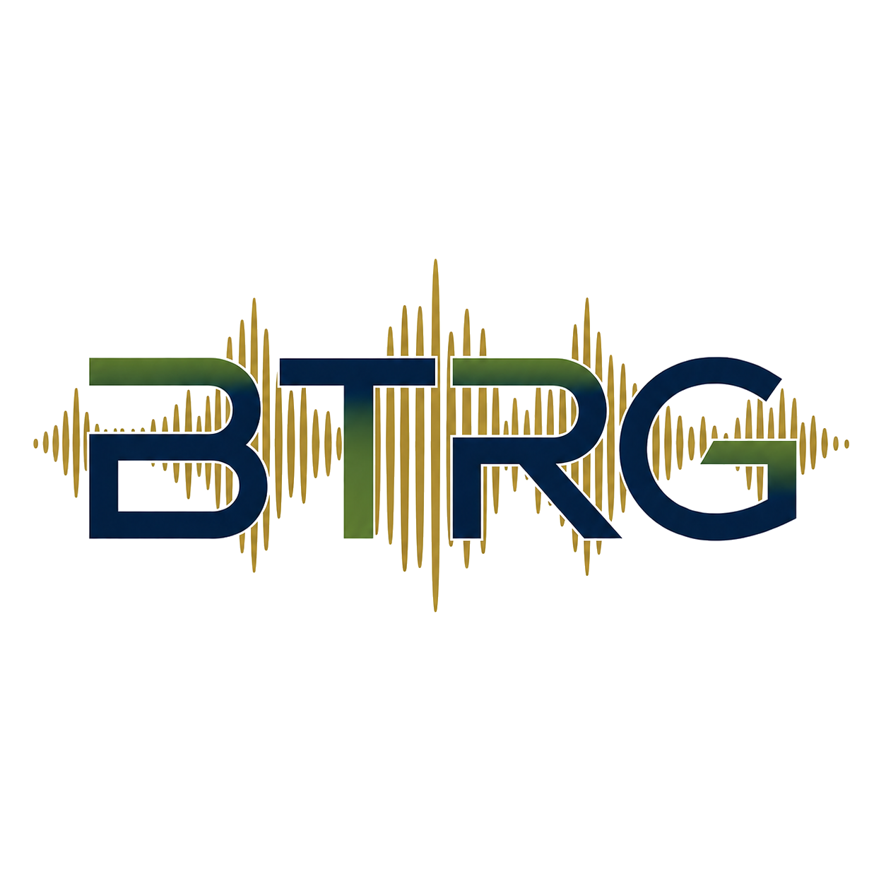
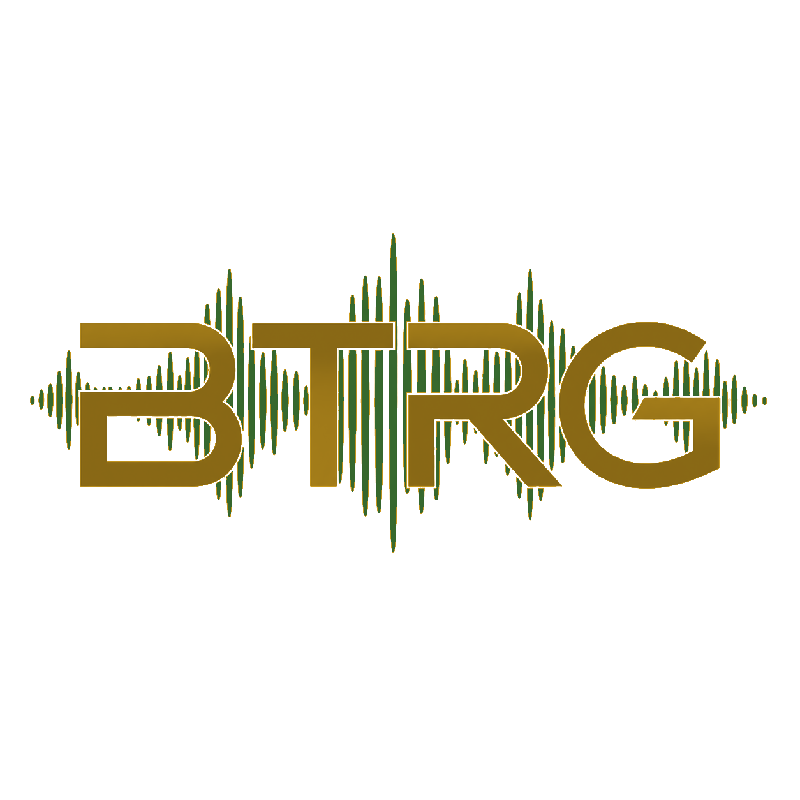
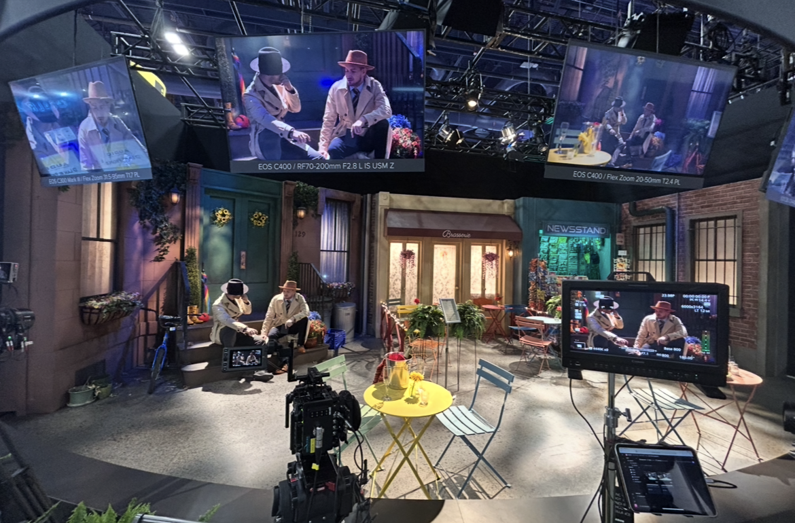
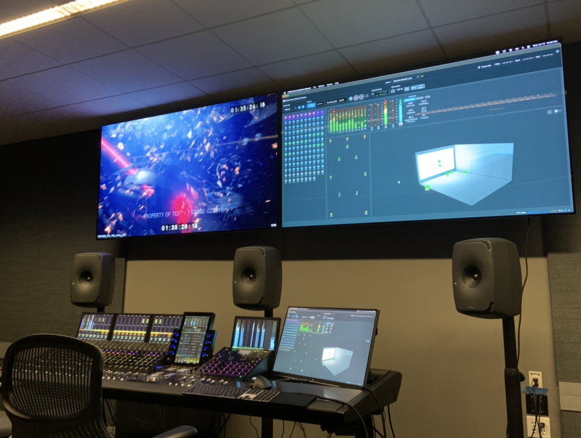
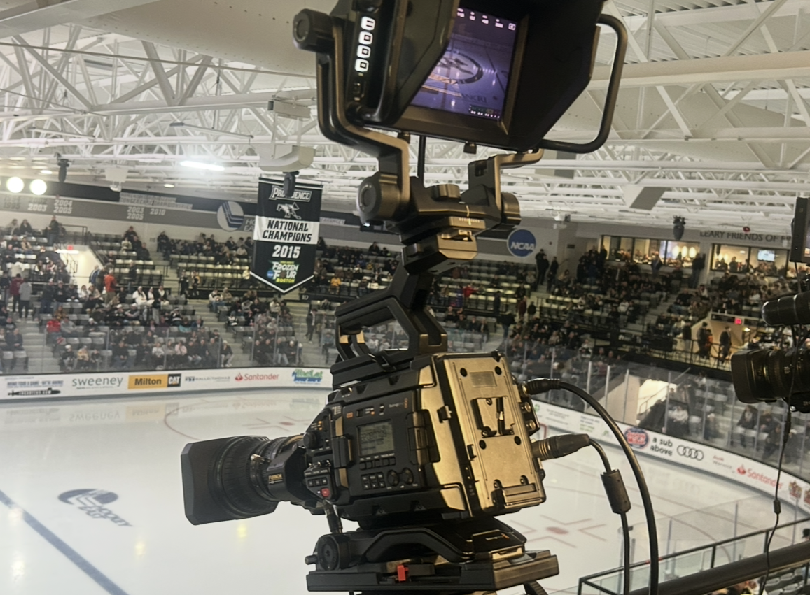
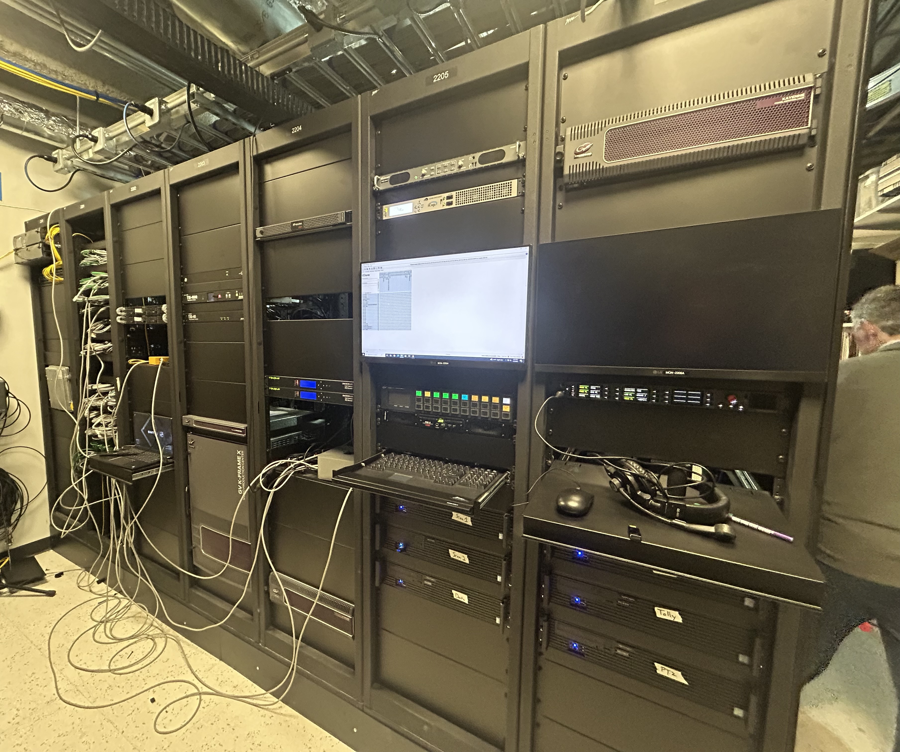
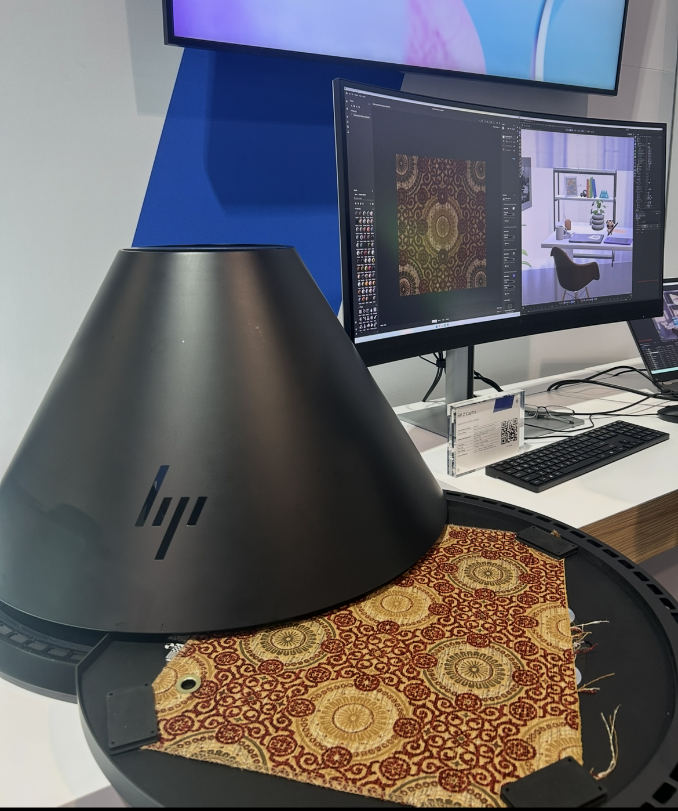

Broadcast Workflow
Advisory services focused on how media is acquired, edited, reviewed, played out, and delivered.
- Ingest & Acquisition
- Editing & Post Production
- Review & Approval
- Automation & Playout
- Distribution & Content Delivery

Burke Technical Resource Group
Practical, experience-driven insight for organizations working across broadcast, media, infrastructure, and emerging technology markets.
Burke Technical Resource Group (BTRG) is an independent advisory firm focused on broadcast, media, infrastructure, and emerging technology markets.
BTRG brings over a decade of experience across broadcast and media technology, enterprise infrastructure, business development, and technology market analysis. The firm combines technical expertise with practical business insight to help organizations better understand technology trends, evaluate opportunities, and navigate complex industry challenges.
Advisory services focused on how media is acquired, edited, reviewed, played out, and delivered.
Guidance on the operational environments used to produce, manage, and deliver live and recorded programming.
Advisory services covering the technology systems that support modern broadcast and media operations.
Strategic advisory services for all companies in the M&E industry pursuing growth in media, infrastructure, and emerging technology markets.
Research and advisory services focused on industry trends, competitive dynamics, and emerging technology markets.

Media & Entertainment
Sports and Live Production
Technology & Infrastructure
Manufacturing & Industrials
BTRG publishes perspective and commentary on LinkedIn, covering broadcast technology, infrastructure trends, semiconductor markets, AI infrastructure, and related industry shifts.
View LinkedIn newsletterLet’s talk about your next market challenge.